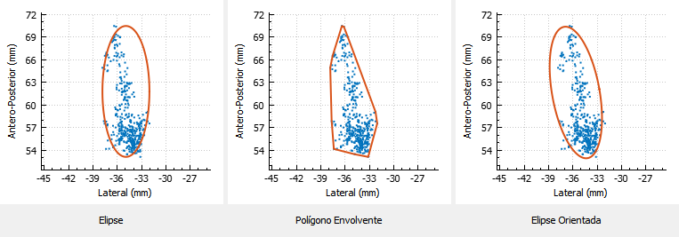
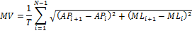
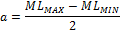

Para visualizar los resultados, se utilizan los botones Nuevo Estudio y Análisis Múltiple. Se abrirá una nueva ventana (ver Figura 3), donde se escogen los datos que se quieren ANALIZAR. En la lista izquierda, se encuentran las carpetas de los pacientes o los archivos de texto de los datos, que se encuentran en la carpeta de datos definida en configuración.
Figura 3. Nuevo estudio.
Se seleccionan los archivos de datos y se agregan a la lista derecha, con el botón ▶. Los archivos de la lista derecha serán los que se analizarán en el nuevo estudio. Para remover archivos de la lista derecha, se seleccionan y se presiona el botón ◀. Con el botón Nuevo Estudio, al tomar varios archivos, se realiza un procesamiento de los datos, de tal manera que la señal presentada será el promedio de las señales seleccionadas, mientras que el botón Análisis Múltiple, cada archivo se procesa de forma individual.
Por último, es necesario dar un nombre al estudio. Al completarse, se habilitará el botón Agregar Estudio, y al presionarse, se presentarán los resultados del estudio en la ventana principal (ver Figura 4).
Figura 4. Visualización de los resultados.
Se presentan las señales de oscilación lateral y antero-posterior a partir de los datos seleccionados. En estás ventanas se presentan todos los estudios que el usuario genere.
Figura 5. Presentación de señales de oscilación lateral y antero-posterior.
Se presenta la ubicación de los datos seleccionados y se definen las áreas de las regiones que contienen a los datos. Las regiones se definen por tres métodos:
- Elipse: Se calcula la elipse que contenga los datos, con ejes horizontal y vertical, a partir de los valores máximos y mínimos.
- Envolvente convexa: Se calcula la envolvente convexa con área mínima para contener todos los datos.
- Elipse orientada: Se calcula la elipse con ejes orientados para contener la mayoría de los datos.

Figura 6. Presentación de áreas de oscilación.
De la investigación en literatura científica, se definen los parámetros de estabilometría que se analizan en el estudio:
| Parámetro |
Descripción |
Cálculo |
| Rango de oscilación |
Es la diferencia entre los valores máximo y mínimo de oscilación lateral o antero-posterior. |

VMAX: Valor máximo
VMIN: Valor mínimo
|
| Velocidad media (MVML,AP) |
La velocidad media es la suma de las velocidades en cada instante de tiempo, del baricentro. |

xi: Magnitud en el instante i.
ti: Instante de tiempo.
n: Número de puntos.
|
| Velocidad media total (MV) |
La velocidad media total es el desplazamiento del baricentro, tanto en x como en y, en el tiempo total de análisis. |

AP y ML: Señales de oscilación antero-posterior y lateral, respectivamente.
N: Número total de puntos de la señal.
T: Tiempo total de análisis.
|
| RMS de la señal |
La distancia media entre el baricentro y cada punto de la señal. |
Si: Punto de la señal.
S̄: Promedio de la señal.
N: Número de datos de la señal.
|
| Distancia RMS (DRMS) |
Representa la distribución estándar de los datos. |
|
| Distancia media (MD) |
Es la distancia media de la trayectoria del COP. |
 |
| Frecuencia media (MF) |
Es el número de revoluciones por segundo, en un movimiento circular uniforme con radio MD, y su recorrido es la trayectoria total del COP. |
 |
| Área del balanceo por límites (A) |
Los radios de la elipse se calculan a partir de los máximos y mínimos de las señales. |


|
| Área del balanceo por polígono envolvente (convex hull) |
El área del mínimo polígono que encierra todos los puntos. |
|
| Área del balanceo por análisis por componentes principales (PCA) |
Se calculan los vectores propios de los puntos de la señal. El primer vector propio define los radios de la elipse y su ángulo de rotación. |


|
Tabla 1. Parámetros de estabilidad.